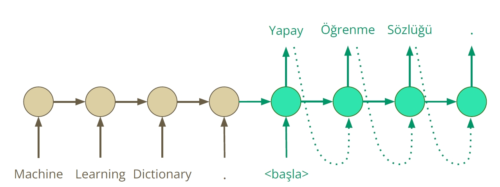

Yapay Öğrenme Sözlüğü ¶

Hepimizin bildiği gibi, Yapay Öğrenme yöntemleri bilim ve teknolojinin birçok alanında araştırmalarımıza yön vermektedir. Bu yöntemler, algoritmalar içinde saklı kalmayıp, yaşamımızın birçok kesitine yeni kavramlar getirmekte ve teknolojiyi şekillendirmektedir.
Yapay Öğrenme yöntemlerini geliştirmek ve toplum yararına kullanabilmek için, bu alandaki terimlerin dilimize aktarılmasının önemli olduğunu düşünüyoruz. Bu heyecanla ve aylar süren yoğun çalışmalar sonucu hazırladığımız Yapay Öğrenme Terimleri Sözlüğü’nü sizlerle paylaşıyoruz.